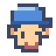
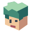
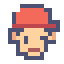

网站标签页图标
9 种新画风，加上原来的红帽像素少年，共 10 个头部图标。配色、发型与配饰自由探索，点击即可在标签页试用。

当前试用 01


当前为静态对比；启用 JavaScript 可点选试用和切换背景。所有 SVG 可从 icons 文件夹单独取用。
像素玩家不错，在此基础上探索9种不同风格的图标，使用fly-favicon 你这全是红色帽子 大哥 把之前的红帽少年也加进去 一共十个 一行五个哦